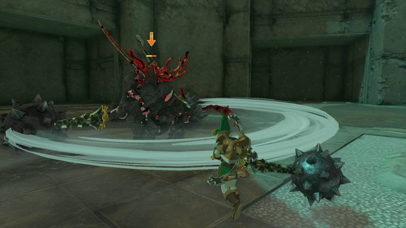
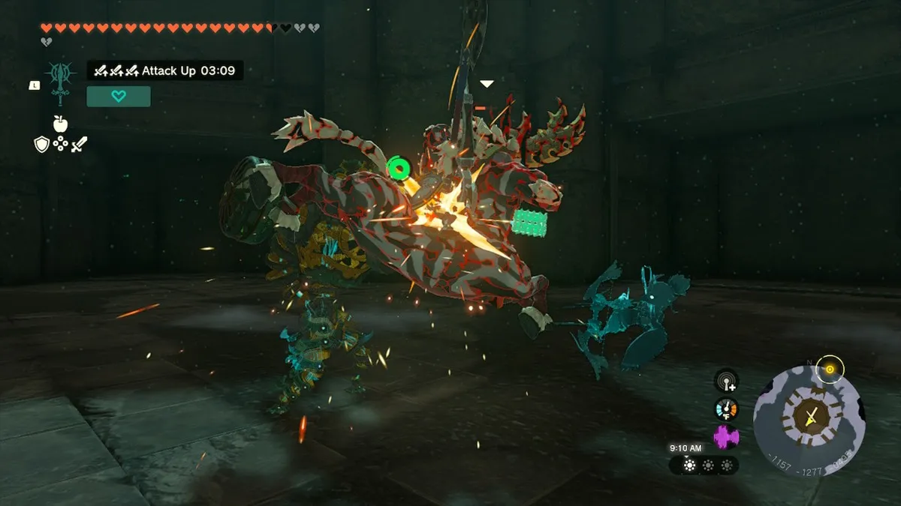
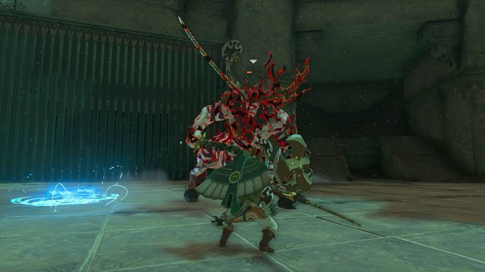

地底竞技场的人马对决（游戏实机截图）
人马不像普通怪物可以莽过去：它会冲锋、跳劈、喷火、射爆裂箭，血量还厚。但它有一套固定的出招规律，学会闪避反击和骑背，普通人马也能无伤过；白银人马打下来，一根刃角就是全游戏最高的余料攻击。
- 白银人马血量5000，刃角余料攻击+55、碎角+51，是全游戏余料天花板。
- 骑背攻击不消耗武器耐久：把最强武器留到骑背时用，是打人马的核心省耐久技巧。
- 地底的铠甲人马要先破甲：炸弹花、钝器重击都行，甲不破打上去几乎不掉血。
- 人马咆哮会摧毁附近的左纳乌装置和蓝图造物，别在它面前摆炮台。
- 人马对闪耀果免疫，别拿它当控制技；用射脸制造硬直，出现提示后上背。铠甲人马先用爆炸或钝击破甲；盾反与闪避仍是正路。
- 野外人马会升级：打怪攒隐藏分，血月后红变蓝、蓝变白、白变银；浮岛斗技场第 4、5 只白银是开局就有的固定白银。
一、人马种类与强度
人马按颜色分档，越往后血量、攻击和掉落越好，四档血量依次是红鬃 2000、蓝鬃 3000、白鬃 4000、白银 5000。游戏进程推进后，野外人马会逐步升级：前期多是普通与蓝色，中后期出现白色与白银。白银人马血量 5000，是野外单体最耐打的敌人之一，第一次打建议先备好高攻武器和回血料理再去。
| 种类 | 定位 | 掉落要点 |
|---|---|---|
| 普通人马 | 前期练手 · 血量 2000 | 人马角、蹄、肝脏，练闪避的好对手 |
| 蓝鬃莱尼尔攻略 | 中期 · 血量 3000 | 掉落品质提升，开始出较好的角 |
| 白鬃莱尼尔攻略 | 后期 · 血量 4000 | 高攻素材，适合余料过渡 |
| 白银莱尼尔攻略 | 终局 · 血量 5000 | 刃角 +55、碎角 +51，全游戏最高余料 |
本篇是总论，讲通用打法与升级机制，下面先给出红、蓝、白三档的代表性出没点；各颜色的完整出没点清单分别写在三张变体页里：蓝鬃莱尼尔攻略（血量 3000）、白鬃莱尼尔攻略（血量 4000）、白银莱尼尔攻略（血量 5000）。

与人马对峙：先读招式，再找闪避窗口（游戏实机截图）
二、红/蓝/白三档：血量、出没点与掉落
四档血量前面已经列了：红鬃 2000、蓝鬃 3000、白鬃 4000、白银 5000。下面把红、蓝、白三档的代表性出没点列出来，白银的完整出没点见白银页。注意一点：除浮岛斗技场外，地表的人马都会随隐藏分升级，你今天在某地看到蓝鬃，过段时间再来可能已经是白鬃；下面标的点是指这个位置开局就是这个颜色，升级后颜色会变，但位置不变。
| 档位 | 血量 | 固定出没点（代表） | 掉落 |
|---|---|---|---|
| 红鬃 | 2000 | 波伊姆斯山、北阿卡莱（3681, 2959, 0039）、奥赛拉平原 | 人马角、蹄、肝脏，肝脏掉率最低 |
| 蓝鬃 | 3000 | 拉聂尔台地（2661, -0946, 0232）、哈特芬山谷（0098, -3367, 0018）、拉聂尔湿地（1996, -0307, 0022） | 蓝鬃角，开始出较好的角 |
| 白鬃 | 4000 | 乌克克平原（3877, 0951, 0256）、卡玛斯台地（1464, -3036, 0215）、利索卡雪原（-4445, -0989, 0511） | 白鬃角，高攻余料过渡选择 |
红鬃：前期练手，三个固定点
红鬃是开局最常见的档位，2000 血，攻击模式和别的档位一样，只是伤害低、血少，最适合练闪避和骑背。固定点有三处：波伊姆斯山山顶（卓拉领地东侧，这只红鬃从不升级，永远是红鬃，适合随时回来练手）；北阿卡莱、乌尔利山一带（3681, 2959, 0039）；奥赛拉平原。注意：除波伊姆斯山那只外，其余红鬃点都会随隐藏分升级，今天打是红鬃，刷够怪、过几个血月再来可能已经变蓝。
蓝鬃：中期主力，拉聂尔一带三处
蓝鬃 3000 血，开始掉品质更好的角。固定点集中在拉聂尔地区：拉聂尔台地（2661, -0946, 0232）、哈特芬山谷（0098, -3367, 0018）、拉聂尔湿地·金凯德岛以南（1996, -0307, 0022）。三处都在拉聂尔一带，跑一趟能连刷三只。另外浮岛斗技场第 2 只也是蓝鬃。蓝鬃页有完整清单与路线。
白鬃：后期门槛，三处都在边境
白鬃 4000 血，掉落的白鬃角是高攻余料的过渡选择。固定点三处：乌克克平原·雷兽山北边（3877, 0951, 0256）、卡玛斯台地·花柔莉亚山南边（1464, -3036, 0215）、利索卡雪原·海布拉地区（-4445, -0989, 0511）。三处都在地图边缘，跑过去顺路可以开鸟望塔和神庙。浮岛斗技场第 3 只也是白鬃。白鬃页有完整清单。
想刷人马的肝脏（强化要用）就打高档人马：档位越高，肝脏掉率越高，红鬃最难出，白银最稳。别在红鬃身上死磕肝脏，效率太低。
三、野外人马升级机制：为什么越打越强
王国之泪里没有“固定难度”这回事：你打败的强敌越多，游戏在后台攒的隐藏分越高，野外的人马就会一档一档往上升。顺序是固定的：红鬃→蓝鬃→白鬃→白银。升级发生在血月：打死一只人马、攒够分数，下一个血月它刷新时可能就升了一档。玩家社区估算，白鬃升白银大约要 8100 分（估算值，非官方数字）——不用记这个数，记住规律就行：多打强敌、多打人马，白银自然会出现。
两点例外要记住：海拉鲁城堡门楼和波伊姆斯山的人马永远不会升白银；浮岛斗技场第 4 只白银、第 5 只铠甲白银是开局就有的固定白银，不用等升级。等隐藏分够了，地表还会在三处固定出现白银：诺特勒湿地、拉比亚平原、塔邦挞丘陵塔玛池塘东侧高地。想速刷白银角，最快的办法是连着打人马：打一只、等血月、再打下一只，循环几轮，满地都是白银。玩家社区统计，全游戏共 34 只人马（地上 15 只、地底 19 只），其中 12 只最终能升到白银（9 只由低档升级而来、3 只固定白银）。
这个机制也解释了为什么有人开局找不到白银、有人满地图都是白银：不是运气，是隐藏分。觉得人马太强就先别打，隐藏分不会自己涨；想要白银就主动清怪，清得越多，升级越快。
四、通用打法：闪避、盾反与骑背
人马的冲锋和跳劈都有明显前摇：冲锋时向侧面闪避触发林克时间，跳劈落地前向后闪避同样能触发。盾反可以弹开它的近战挥击，但爆裂箭和喷火不要硬接，拉开距离或绕到侧面。最关键的一步是骑背：人马被打晕、被箭射中头部或从高处落到它背上后，就能骑上去连砍。
骑背时武器不消耗耐久，这一点要充分利用：平时用普通武器磨血、打晕，骑背的一刻再换上最高攻击的武器猛砍。骑背结束人马会把林克甩下来，落地前开滑翔伞拉开距离，再射一箭头部可以续一轮控制。
进场前先备三样：武器带两把——一把普通武器磨血打晕、一把最高攻击的留给骑背；料理带回血和加攻击的各几道，白银人马一套连招能秒没强化的防具；防具至少升到两星再去打白银，防御不够容错率太低。另外多带基斯的眼球：眼球箭会自动追踪，射脸造硬直比裸射稳得多。
五、白银人马与掉落价值
白银人马的刃角余料攻击 +55，碎角 +51 且带粉碎效果、可破甲，是余料建造的毕业选择之一。配格鲁德武器攻击翻倍、配卓拉武器沾水翻倍时，数值还会再放大，详见本站余料建造完全指南。打白银人马不要贪刀：它一套连招的伤害足以秒掉没强化的防具，先保证两级以上的防具和满血再进场。
六、铠甲人马与地底竞技场
地底有些人马穿着铠甲，直接砍上去伤害极低。正确顺序是先破甲：炸弹花贴脸炸、钝器重武器砸，甲碎了再按正常流程打。地底斗技场遗迹正下方有一座浮岛斗技场（Floating Colosseum），里面有一场五连人马车轮战，顺序是红鬃、蓝鬃、白鬃、白银，最后是铠甲白银人马，打之前把料理、防具和武器全部准备好，中途没有补给点。

竞技场连战：最后一只是铠甲白银人马（游戏实机截图）
七、翻车点与常见问题
三个最常见的翻车原因：第一，在人马面前摆左纳乌装置，一声咆哮就全碎了，炮台流对人马无效；第二，拿闪耀果当控制技，人马对闪耀果免疫，扔了也白白浪费素材；第三，骑背时用低攻武器，把不耗耐久的窗口浪费了。记住这三点，白银人马的难度会下降一大截。
还有两件容易翻车的事：第四，空手进场，没带基斯的眼球就想射脸造硬直，裸射命中率低，等于白给；第五，打完不捡角，人马死后掉的角、蹄、肝脏不捡就白打了，尤其是白银刃角，掉在地上不捡等于白跑一趟。
八、按阶段打人马：前期练手、中期刷角、后期刷白银
前期（刚下初始台地）：先去波伊姆斯山打红鬃练手，目标不是赢，是学会闪避节奏和骑背；带几道回血料理，防具不用强求。中期（开完几个神殿）：去拉聂尔一带连刷三只蓝鬃，攒蓝鬃角做余料，顺路把白鬃点踩了；这时候开始攒隐藏分。后期（隐藏分够了）：诺特勒湿地、拉比亚平原、塔邦挞丘陵三处白银点轮刷，白银刃角 +55 是毕业余料；浮岛斗技场五连战是最终考试，打之前备好料理、防具和武器，中途没有补给点。
哈里的判断：别在前期硬啃白银，人马的收益和档位挂钩，前期打红鬃练手、中期刷蓝鬃攒角、后期再碰白银，是最省资源的路线。红鬃练熟了再去碰蓝鬃，蓝鬃打顺了再去碰白鬃，每档都是下一档的练手场。
常见问题
- 打不过白银人马怎么办？先去刷防具强化和料理，把武器换成高攻余料，再回来。也可以先打低档人马练闪避节奏。
- 人马角有什么用？余料第一梯队，也能卖钱，但留着做武器远比卖掉划算。
- 骑背怎么触发？射头部、打晕或从高处落到背上都可以，骑上去立刻换最高攻击武器。
- 人马多久刷新一次？血月后刷新；升级后刷新的可能是更高档位，想刷白银就打一只、等血月、再打下一只。
- 红鬃人马会一直是红鬃吗？大部分会随隐藏分升级，只有波伊姆斯山和海拉鲁城堡门楼的固定不变。